Taotao Wang, Associate Professor
College of Electronics and Information Engineering, Shenzhen University
Definition of Complex Integration
Directed Curves
Let $\displaystyle C$ be a smooth (or piecewise smooth（分段光滑）) curve in the plane. If one of the two directions along $\displaystyle C$ is chosen as the positive direction（正方向）, $\displaystyle C$ is called a directed curve（有向曲线）.
If the positive direction of $\displaystyle C$ is from $\displaystyle A$ to $\displaystyle B$, then the direction from $\displaystyle B$ to $\displaystyle A$ is the negative direction of $\displaystyle C$; the curve with this direction is denoted by $\displaystyle C^-$.
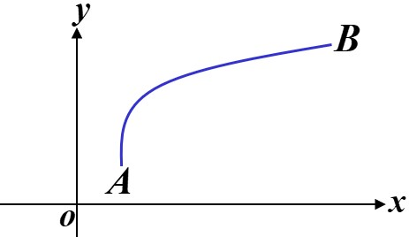
For a simple closed curve, the counterclockwise direction is usually taken as positive and the clockwise direction as negative.
If a closed curve is the boundary of a domain, its positive direction is defined as follows:
When a point $\displaystyle P$ moves along the boundary in the positive direction, the part of the domain near $\displaystyle P$ always lies on the left of $\displaystyle P$.
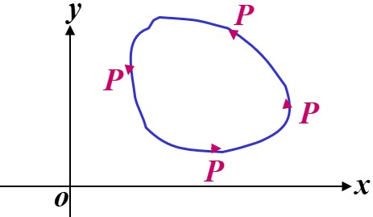
Hence the positive direction of the outer boundary of a domain is counterclockwise, and that of an inner boundary is clockwise.
Definition of Complex Integration
Let $\displaystyle f(z)$ be defined in a domain $\displaystyle D$, and let $\displaystyle C$ be a smooth directed curve in $\displaystyle D$ from $\displaystyle A$ to $\displaystyle B$. Divide $\displaystyle C$ arbitrarily into $\displaystyle n$ arcs by the points \[A=z_0,z_1,z_2,\cdots,z_{k-1},z_k,\cdots,z_n=B.\] Choose an arbitrary point $\displaystyle \zeta_k$ on each arc $\displaystyle \wideparen{z_{k-1}z_k}$ $\displaystyle (k=1,2,\cdots,n)$ (see the figure on the next slide) and form the sum \[S_n=\sum_{k=1}^{n}f(\zeta_k)(z_k-z_{k-1})=\sum_{k=1}^{n}f(\zeta_k)\Delta z_k,\] where $\displaystyle \Delta z_k=z_k-z_{k-1}$.
Let $\displaystyle \Delta s_k$ be the length of the arc $\displaystyle \wideparen{z_{k-1}z_k}$ and $\displaystyle \delta=\max_{1\leq k\leq n}\Delta s_k$. If, as $\displaystyle n\to\infty$ and $\displaystyle \delta\to 0$, $\displaystyle S_n$ has a unique limit no matter how $\displaystyle C$ is divided and how the points $\displaystyle \zeta_k$ are chosen, this limit is called the integral（积分） of $\displaystyle f(z)$ along $\displaystyle C$ and is denoted by \[\int_C f(z)\dif z=\lim_{\delta\to 0}\sum_{k=1}^n f(\zeta_k)\Delta z_k.\]
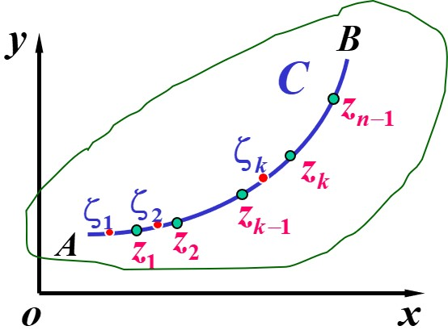
Remarks on the definition:
Each term $\displaystyle f(\zeta_k)\Delta z_k$ is a small step $\displaystyle \Delta z_k$ along $\displaystyle C$, rotated and stretched by the complex number $\displaystyle f(\zeta_k)$; $\displaystyle S_n$ adds these steps head to tail. For $\displaystyle f(z)\equiv1$ the steps simply add up to $\displaystyle B-A$, so $\displaystyle \int_C \dif z=B-A$.
If $\displaystyle C$ is a closed curve, the integral along $\displaystyle C$ is written as $\displaystyle \oint_C f(z)\dif z$.
If $\displaystyle C$ is the interval $\displaystyle a\leq x\leq b$ of the real axis and $\displaystyle f(z)=u(x)$ is real-valued, the definition reduces to the definite integral $\displaystyle \int_a^b u(x)\dif x$ of a real function of one variable.
Existence and Computation of Complex Integrals
If $\displaystyle f(z)=u(x,y)+iv(x,y)$ is continuous on a smooth curve $\displaystyle C$, then $\displaystyle \int_C f(z)\dif z$ exists, and \[\int_C f(z)\dif z=\int_C u\dif x-v\dif y+i\int_C v\dif x+u\dif y.\] The right-hand side consists of two line integrals of the second kind（第二类曲线积分）.
Let $\displaystyle z_k=x_k+iy_k$ and $\displaystyle \zeta_k=\xi_k+i\eta_k$. Then \[\Delta z_k=z_k-z_{k-1}=(x_k-x_{k-1})+i(y_k-y_{k-1})=\Delta x_k+i\Delta y_k.\]
Hence \[\begin{aligned} \sum_{k=1}^n f(\zeta_k)\Delta z_k & =\sum_{k=1}^n \big[u(\xi_k,\eta_k)+iv(\xi_k,\eta_k)\big](\Delta x_k+i\Delta y_k) \\ & =\sum_{k=1}^n \big[u(\xi_k,\eta_k)\Delta x_k-v(\xi_k,\eta_k)\Delta y_k\big] \\ & \quad+i\sum_{k=1}^n \big[v(\xi_k,\eta_k)\Delta x_k+u(\xi_k,\eta_k)\Delta y_k\big]. \end{aligned}\]
Since $\displaystyle u$ and $\displaystyle v$ are continuous, the existence theorem for line integrals shows that, as $\displaystyle n\to\infty$ and the maximum arc length tends to zero, both sums on the right have limits, regardless of how $\displaystyle C$ is divided and how the points $\displaystyle (\xi_k,\eta_k)$ are chosen. So the left-hand side has a limit as well: \[\begin{aligned} \boxed{\sum_{k=1}^n f(\zeta_k)\Delta z_k} & =\boxed{\sum_{k=1}^n \big[u\Delta x_k-v\Delta y_k\big]}+i\boxed{\sum_{k=1}^n \big[v\Delta x_k+u\Delta y_k\big]} \\ \downarrow\quad & \qquad\qquad\quad\downarrow\qquad\qquad\qquad\qquad\quad\downarrow \\ \boxed{\int_C f(z)\dif z} & =\boxed{\int_C u\dif x-v\dif y}+i\boxed{\int_C v\dif x+u\dif y}. \end{aligned}\]
Notes:
The formula is easy to remember: multiply $\displaystyle f(z)=u+iv$ by $\displaystyle \dif z=\dif x+i\dif y$ formally: \[\begin{aligned} \int_C f(z)\dif z & =\int_C (u+iv)(\dif x+i\dif y) \\ & =\int_C u\dif x-v\dif y+i\int_C v\dif x+u\dif y. \end{aligned}\]
If $\displaystyle C$ is given by the parametric equation（参数方程） $\displaystyle z=z(t)=x(t)+iy(t)$ $\displaystyle (\alpha\leq t\leq\beta)$, where $\displaystyle t=\alpha$ and $\displaystyle t=\beta$ correspond to the initial and terminal points, and $\displaystyle f(z)$ is continuous on $\displaystyle C$, then \[f\big(z(t)\big)=u\big(x(t),y(t)\big)+iv\big(x(t),y(t)\big).\]
Substituting $\displaystyle \dif x=x'(t)\dif t$ and $\displaystyle \dif y=y'(t)\dif t$, \[\begin{aligned} \int_C f(z)\dif z & =\int_C u\dif x-v\dif y+i\int_C v\dif x+u\dif y \\ & =\int_\alpha^\beta \Big\{u\big[x(t),y(t)\big]x'(t)-v\big[x(t),y(t)\big]y'(t)\Big\}\dif t \\ & \quad+i\int_\alpha^\beta \Big\{v\big[x(t),y(t)\big]x'(t)+u\big[x(t),y(t)\big]y'(t)\Big\}\dif t \\ & =\int_\alpha^\beta \Big\{u\big[x(t),y(t)\big]+iv\big[x(t),y(t)\big]\Big\}\big\{x'(t)+iy'(t)\big\}\dif t. \end{aligned}\] Therefore \[\boxed{\int_C f(z)\dif z=\int_\alpha^\beta f\big[z(t)\big]z'(t)\dif t.}\]
If $\displaystyle C$ is a piecewise smooth curve formed by the smooth curves $\displaystyle C_1,C_2,\cdots,C_n$ joined end to end, then \[\int_C f(z)\dif z=\int_{C_1} f(z)\dif z+\int_{C_2} f(z)\dif z+\cdots+\int_{C_n} f(z)\dif z.\]
Commonly used parametric equations:
Line segment from $\displaystyle z_1$ to $\displaystyle z_2$: $\displaystyle z=(1-t)z_1+tz_2=z_1+t(z_2-z_1)$, $\displaystyle 0\leq t\leq 1$.
Circle with center $\displaystyle z_0$ and radius $\displaystyle r$ (counterclockwise): $\displaystyle z=z_0+re^{i\theta}$, $\displaystyle 0\leq\theta\leq 2\pi$.
Compute $\displaystyle \int_C z\dif z$, where $\displaystyle C$ is the line segment from the origin to the point $\displaystyle 3+4i$.
The segment is $\displaystyle x=3t$, $\displaystyle y=4t$ $\displaystyle (0\leq t\leq 1)$, i.e. $\displaystyle z=(3+4i)t$, so $\displaystyle \dif z=(3+4i)\dif t$ and \[\int_C z\dif z=\int_0^1 (3+4i)^2 t\dif t=(3+4i)^2 \int_0^1 t\dif t=\frac{(3+4i)^2}{2}=-\frac{7}{2}+12i.\]
Moreover, \[\int_C z\dif z=\int_C (x+iy)(\dif x+i\dif y)=\int_C x\dif x-y\dif y+i\int_C y\dif x+x\dif y.\] Both line integrals are independent of the path, because the integrands are exact differentials: \[x\dif x-y\dif y=\dif\Big(\frac{x^2-y^2}{2}\Big),\qquad y\dif x+x\dif y=\dif(xy).\] Therefore, for every path $\displaystyle C$ from the origin to $\displaystyle 3+4i$, \[\int_C z\dif z=\frac{(3+4i)^2}{2}.\]
Compute $\displaystyle \int_C \operatorname{Re}z\dif z$, where $\displaystyle C$ is
the line segment from the origin to $\displaystyle 1+i$;
the arc of the parabola $\displaystyle y=x^2$ from the origin to $\displaystyle 1+i$;
the broken line from the origin along the real axis to $\displaystyle 1$ and then vertically to $\displaystyle 1+i$.
The path is $\displaystyle z(t)=t+it$ $\displaystyle (0\leq t\leq 1)$, so $\displaystyle \operatorname{Re}z=t$ and $\displaystyle \dif z=(1+i)\dif t$. Hence \[\int_C \operatorname{Re}z\dif z=\int_0^1 (1+i)t\dif t=\frac{1}{2}(1+i).\]
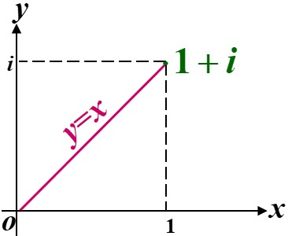
The path is $\displaystyle z(t)=t+it^2$ $\displaystyle (0\leq t\leq 1)$, so $\displaystyle \operatorname{Re}z=t$ and $\displaystyle \dif z=(1+2ti)\dif t$. Hence \[\begin{aligned} \int_C \operatorname{Re}z\dif z & =\int_0^1 t(1+2ti)\dif t \\ & =\left.\left(\frac{t^2}{2}+\frac{2i}{3}t^3\right)\right|_0^1 \\ & =\frac{1}{2}+\frac{2}{3}i. \end{aligned}\]
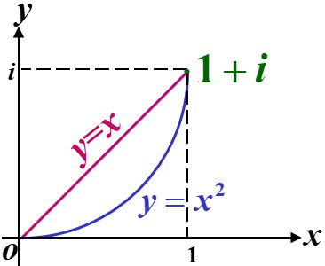
The path consists of two line segments.
On the segment of the real axis, $\displaystyle z(t)=t$ $\displaystyle (0\leq t\leq 1)$, so $\displaystyle \operatorname{Re}z=t$ and $\displaystyle \dif z=\dif t$.
On the segment from $\displaystyle 1$ to $\displaystyle 1+i$, $\displaystyle z(t)=1+it$ $\displaystyle (0\leq t\leq 1)$, so $\displaystyle \operatorname{Re}z=1$ and $\displaystyle \dif z=i\dif t$.
\[\int_C \operatorname{Re}z\dif z=\int_0^1 t\dif t+\int_0^1 1\cdot i\dif t=\frac{1}{2}+i.\]
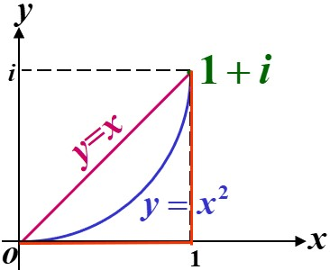
The three paths have the same endpoints but give three different values: the integral of $\displaystyle \operatorname{Re}z$ depends on the path.
Compute $\displaystyle \oint_C \abs{z}\dif z$, where $\displaystyle C$ is the circle $\displaystyle \abs{z}=2$ (counterclockwise).
The path is $\displaystyle z=2e^{i\theta}$ $\displaystyle (0\leq\theta\leq 2\pi)$, so $\displaystyle \dif z=2ie^{i\theta}\dif\theta$ and $\displaystyle \abs{z}=2$ on $\displaystyle C$. Hence \[\oint_C \abs{z}\dif z=\int_0^{2\pi} 2\cdot 2ie^{i\theta}\dif\theta=4i\int_0^{2\pi} (\cos\theta+i\sin\theta)\dif\theta=0.\]
Compute $\displaystyle \oint_C \frac{1}{(z-z_0)^{n+1}}\dif z$, where $\displaystyle n$ is an integer and $\displaystyle C$ is the counterclockwise circle with center $\displaystyle z_0$ and radius $\displaystyle r$.
The path is $\displaystyle z=z_0+re^{i\theta}$ $\displaystyle (0\leq\theta\leq 2\pi)$, so $\displaystyle \dif z=ire^{i\theta}\dif\theta$ and \[\begin{aligned} \oint_C \frac{1}{(z-z_0)^{n+1}}\dif z & =\int_0^{2\pi} \frac{ire^{i\theta}}{r^{n+1}e^{i(n+1)\theta}}\dif\theta \\ & =\frac{i}{r^n}\int_0^{2\pi} e^{-in\theta}\dif\theta. \end{aligned}\]
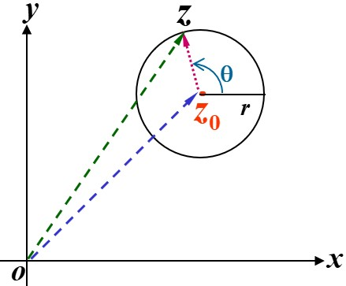
When $\displaystyle n=0$, \[\oint_C \frac{1}{z-z_0}\dif z=i\int_0^{2\pi}\dif\theta=2\pi i.\] When $\displaystyle n\neq 0$, \[\oint_C \frac{1}{(z-z_0)^{n+1}}\dif z=\frac{i}{r^n}\int_0^{2\pi}(\cos n\theta-i\sin n\theta)\dif\theta=0.\] So \[\boxed{\oint_{\abs{z-z_0}=r}\frac{1}{(z-z_0)^{n+1}}\dif z=\begin{cases} 2\pi i, & n=0, \\ 0, & n\neq 0. \end{cases}}\]
Important conclusion: the value does not depend on the center or the radius of the circle.
Properties of Complex Integrals
Complex integrals have the same basic properties as line integrals of real functions:
$\displaystyle \int_C f(z)\dif z=-\int_{C^-}f(z)\dif z$;
$\displaystyle \int_C kf(z)\dif z=k\int_C f(z)\dif z$ ($\displaystyle k$ is a complex constant);
$\displaystyle \int_C \big[f(z)\pm g(z)\big]\dif z=\int_C f(z)\dif z\pm\int_C g(z)\dif z$;
If $\displaystyle C$ has length $\displaystyle L$ and $\displaystyle \abs{f(z)}\leq M$ on $\displaystyle C$, then \[\abs{\int_C f(z)\dif z}\leq\int_C \abs{f(z)}\dif s\leq ML. \tag*{(integral estimation inequality)}\]
Property 4) is the integral estimation inequality（积分估值不等式）: $\displaystyle \abs{\sum f(\zeta_k)\Delta z_k}\leq\sum\abs{f(\zeta_k)}\abs{\Delta z_k}$ and $\displaystyle \abs{\Delta z_k}\leq\Delta s_k$.
Let $\displaystyle C$ be the line segment from $\displaystyle i$ to $\displaystyle 2+i$. Prove that \[\abs{\int_C \frac{1}{z^2}\dif z}\leq 2.\]
The segment is $\displaystyle z=(1-t)i+t(2+i)=2t+i$ $\displaystyle (0\leq t\leq 1)$, and its length is $\displaystyle L=2$. On $\displaystyle C$, \[\abs{\frac{1}{z^2}}=\frac{1}{\abs{2t+i}^2}=\frac{1}{4t^2+1}\leq 1,\] so $\displaystyle M=1$, and by the estimation inequality $\displaystyle \abs{\int_C \frac{1}{z^2}\dif z}\leq ML=2$.
Summary and Thinking
In this part we learned the definition, the existence condition, the computation, and the properties of complex integrals. A complex integral is essentially a pair of line integrals, so it has exactly the same properties as the line integrals of calculus. The key skill is the general method of computing a complex integral by parametrizing the path: \[\int_C f(z)\dif z=\int_\alpha^\beta f\big[z(t)\big]z'(t)\dif t.\]
Is the complex integral $\displaystyle \int_C f(z)\dif z$ consistent with the definite integral of a real function of one variable?
If $\displaystyle C$ is the interval $\displaystyle [\alpha,\beta]$ of the real axis, then $\displaystyle \int_C f(z)\dif z=\int_\alpha^\beta f(x)\dif x$; when $\displaystyle f(x)$ is real-valued, this is the ordinary definite integral.
In general, however, the integral of $\displaystyle f(z)$ from $\displaystyle \alpha$ to $\displaystyle \beta$ cannot simply be written as $\displaystyle \int_\alpha^\beta f(z)\dif z$: it is a line integral, and its value may depend on the path. It must be written as $\displaystyle \int_C f(z)\dif z$ with the path $\displaystyle C$ specified.
Motivation
Example 1.1: the integrand $\displaystyle f(z)=z$ is analytic in the whole plane, and the integral is independent of the path. Consequently, the integral of $\displaystyle f(z)=z$ along every closed curve is zero.
Example 1.4 with $\displaystyle n=0$: the integrand $\displaystyle f(z)=\frac{1}{z-z_0}$ is analytic everywhere except at $\displaystyle z_0$, the center of $\displaystyle C$, and $\displaystyle \oint_C \frac{1}{z-z_0}\dif z=2\pi i\neq 0$. Here the domain where $\displaystyle f(z)$ is analytic, the plane with $\displaystyle z_0$ removed, is not simply connected.
Example 1.2: the integrand $\displaystyle f(z)=\operatorname{Re}z=x$ does not satisfy the Cauchy–Riemann equations ($\displaystyle u_x=1\neq v_y=0$), so it is analytic nowhere, and the integral depends on the path.
So whether an integral depends on the path seems to be decided by the analyticity of the integrand and the connectivity of the domain.
Cauchy's Theorem for Simply Connected Domains (Cauchy–Goursat Theorem（柯西–古萨定理）)
If $\displaystyle f(z)$ is analytic in a simply connected domain $\displaystyle B$, then \[\oint_C f(z)\dif z=0\] for every closed curve $\displaystyle C$ lying in $\displaystyle B$.
The curve $\displaystyle C$ in the theorem need not be simple: it may cross itself.
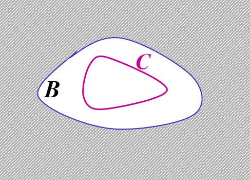
Why is the theorem plausible? Assume in addition that $\displaystyle f'(z)$ is continuous, and let $\displaystyle C$ be a simple closed curve bounding the region $\displaystyle D\subset B$. Then $\displaystyle u$ and $\displaystyle v$ have continuous partial derivatives, and Green's formula（格林公式） $\displaystyle \oint_C P\dif x+Q\dif y=\iint_D (Q_x-P_y)\dif x\dif y$ gives \[\begin{aligned} \oint_C u\dif x-v\dif y & =\iint_D (-v_x-u_y)\dif x\dif y=0, \\ \oint_C v\dif x+u\dif y & =\iint_D (u_x-v_y)\dif x\dif y=0, \end{aligned}\] because $\displaystyle u_x=v_y$ and $\displaystyle u_y=-v_x$ (Cauchy–Riemann equations). Hence $\displaystyle \oint_C f(z)\dif z=0$.
This was Cauchy's original argument; Goursat later showed that the assumption “$\displaystyle f'(z)$ is continuous” is not needed.
Remarks on the theorem:
If $\displaystyle C$ is the boundary of a domain $\displaystyle B$ and $\displaystyle f(z)$ is analytic on the closed domain $\displaystyle \overline{B}=B+C$ (that is, analytic in some larger domain $\displaystyle B'$ containing $\displaystyle \overline{B}$), then $\displaystyle \oint_C f(z)\dif z=0$.
If $\displaystyle C$ is the boundary of $\displaystyle B$, $\displaystyle f(z)$ is analytic in $\displaystyle B$ and continuous on $\displaystyle \overline{B}=B+C$, the theorem is still valid.
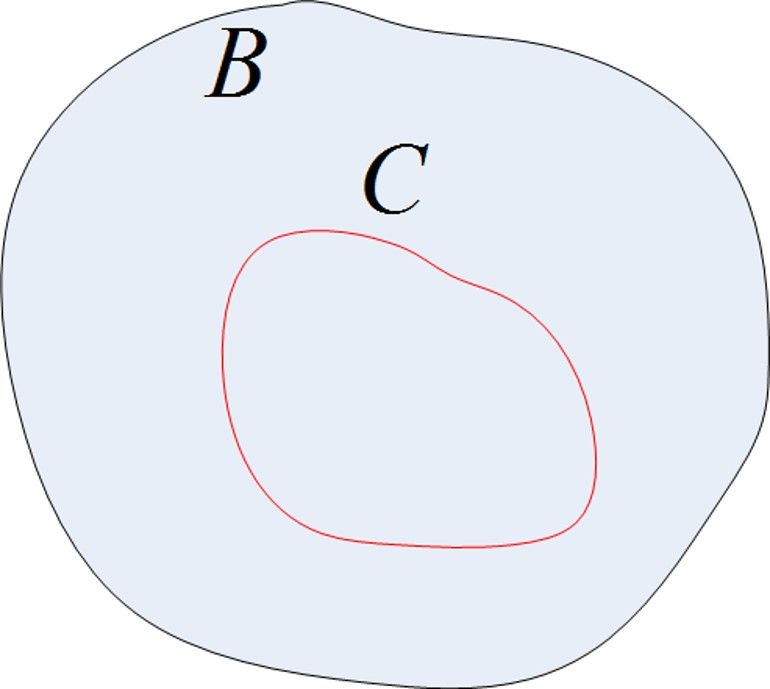
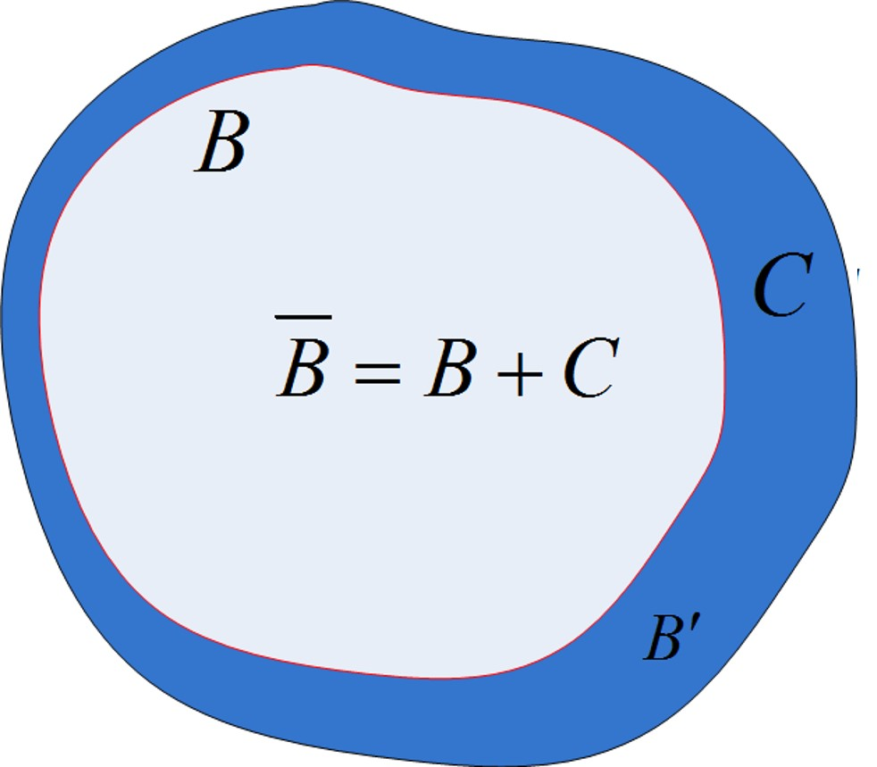
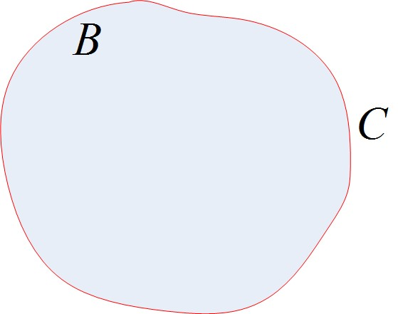
Examples
Compute $\displaystyle \oint_{\abs{z}=1} \frac{1}{2z-3}\dif z$.
The only singular point of $\displaystyle f(z)=\frac{1}{2z-3}$ is $\displaystyle z=\frac{3}{2}$, which lies outside $\displaystyle \abs{z}\leq 1$. So $\displaystyle f(z)$ is analytic on the closed disk $\displaystyle \abs{z}\leq 1$, and by Cauchy's theorem \[\oint_{\abs{z}=1} \frac{1}{2z-3}\dif z=0.\]
Compute $\displaystyle \oint_{\abs{z-i}=\frac{1}{2}} \frac{1}{z(z^2+1)}\dif z$.
By partial fractions, \[\frac{1}{z(z^2+1)}=\frac{1}{z}-\frac{1}{2}\left(\frac{1}{z+i}+\frac{1}{z-i}\right).\] The functions $\displaystyle \frac{1}{z}$ and $\displaystyle \frac{1}{z+i}$ are analytic on $\displaystyle \abs{z-i}\leq\frac{1}{2}$ (their singular points $\displaystyle 0$ and $\displaystyle -i$ lie outside), so their integrals vanish by Cauchy's theorem.
Write $\displaystyle C:\abs{z-i}=\frac{1}{2}$. Then \[\begin{aligned} \oint_C \frac{\dif z}{z(z^2+1)} & =\underbrace{\oint_C \frac{\dif z}{z}-\frac{1}{2}\oint_C \frac{\dif z}{z+i}}_{=0}-\frac{1}{2}\oint_C \frac{\dif z}{z-i} \\ & =-\frac{1}{2}\cdot 2\pi i=-\pi i, \end{aligned}\] where the last integral equals $\displaystyle 2\pi i$ by Example 1.4 (with $\displaystyle z_0=i$, $\displaystyle n=0$).
Summary and Thinking
In this part we focused on Cauchy's theorem for simply connected domains:
If $\displaystyle f(z)$ is analytic in a simply connected domain $\displaystyle B$, then \[\textcolor{blue}{\oint_C f(z)\dif z=0}\] for every closed curve $\displaystyle C$ lying in $\displaystyle B$.
Pay attention to the conditions under which the theorem holds.
What should we pay attention to when applying Cauchy's theorem?
The condition “simply connected domain” cannot be dropped.
Counterexample: $\displaystyle f(z)=\frac{1}{z}$ is analytic in the annulus $\displaystyle \frac{1}{2}<\abs{z}<\frac{3}{2}$, but $\displaystyle \oint_{\abs{z}=1}\frac{1}{z}\dif z=2\pi i\neq 0$.
The converse of the theorem is false.
From $\displaystyle \oint_C f(z)\dif z=0$ we cannot conclude that $\displaystyle f(z)$ is analytic inside $\displaystyle C$.
Counterexample: $\displaystyle \oint_{\abs{z}=1}\frac{1}{z^2}\dif z=0$ (Example 1.4 with $\displaystyle n=1$), but $\displaystyle \frac{1}{z^2}$ is not analytic at $\displaystyle z=0$.
Motivation
Consider $\displaystyle \oint_{\abs{z}=2}\frac{1}{z-1}\dif z$.
The circle $\displaystyle \abs{z}=2$ surrounds the singular point $\displaystyle z=1$, so Cauchy's theorem does not apply, and Example 1.4 does not apply directly either, because $\displaystyle z=1$ is not the center of the circle.
The integrand is analytic in the ring-shaped region between $\displaystyle \abs{z}=2$ and a small circle $\displaystyle \abs{z-1}=\rho$. We expect the integral to equal $\displaystyle \oint_{\abs{z-1}=\rho}\frac{1}{z-1}\dif z=2\pi i$.
We want to extend Cauchy's theorem to multiply connected domains.
Cauchy's Theorem for Multiply Connected Domains
Principle of Deformation of Paths
Let $\displaystyle f(z)$ be analytic in a multiply connected domain $\displaystyle D$, and let $\displaystyle C$ and $\displaystyle C_1$ be two counterclockwise simple closed curves in $\displaystyle D$ such that $\displaystyle C_1$ lies inside $\displaystyle C$ and the region $\displaystyle D_1$ between $\displaystyle C$ and $\displaystyle C_1$ lies in $\displaystyle D$.
Draw two non-intersecting cuts $\displaystyle \wideparen{AA'}$ and $\displaystyle \wideparen{BB'}$ joining $\displaystyle C$ to $\displaystyle C_1$.
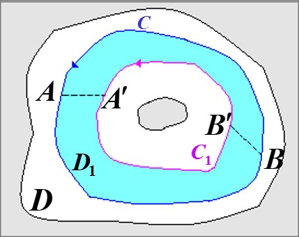
Add the points $\displaystyle E$, $\displaystyle E'$, $\displaystyle F$, $\displaystyle F'$ as in the figure. Then $\displaystyle AEBB'E'A'A$ (red) and $\displaystyle AA'F'B'BFA$ (green) are closed curves.
Each of them, together with its interior, lies in a simply connected part of $\displaystyle D$.
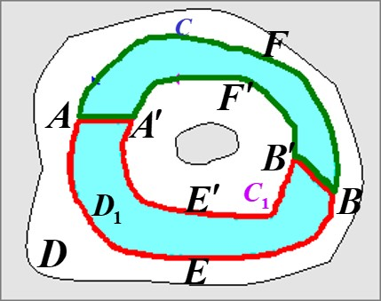
So by Cauchy's theorem \[\oint_{AEBB'E'A'A}f(z)\dif z=0,\qquad \oint_{AA'F'B'BFA}f(z)\dif z=0,\] where \[\begin{aligned} AEBB'E'A'A & =AEB+BB'+B'E'A'+A'A, \\ AA'F'B'BFA & =AA'+A'F'B'+B'B+BFA. \end{aligned}\]
Add the two integrals. The arcs $\displaystyle AEB$ and $\displaystyle BFA$ together form $\displaystyle C$, the arcs $\displaystyle B'E'A'$ and $\displaystyle A'F'B'$ together form $\displaystyle C_1^-$, and each cut is traversed once in each direction: \[\begin{aligned} 0 & =\oint_{C}f(z)\dif z+\oint_{C_1^-}f(z)\dif z \\ & \quad+\int_{\wideparen{AA'}}f(z)\dif z+\int_{\wideparen{A'A}}f(z)\dif z+\int_{\wideparen{BB'}}f(z)\dif z+\int_{\wideparen{B'B}}f(z)\dif z. \end{aligned}\] The integrals along the cuts cancel in pairs, so \[\oint_{C}f(z)\dif z+\oint_{C_1^-}f(z)\dif z=0,\quad\text{that is,}\quad \oint_{C}f(z)\dif z=\oint_{C_1}f(z)\dif z.\]
Let $\displaystyle \Gamma=C+C_1^-$ be the composite closed curve（复合闭路） formed by $\displaystyle C$ (counterclockwise) and $\displaystyle C_1$ (clockwise); $\displaystyle \Gamma$ is the positively oriented boundary of $\displaystyle D_1$. Then \[\oint_{\Gamma}f(z)\dif z=0 \iff \oint_{C}f(z)\dif z=\oint_{C_1}f(z)\dif z.\] Principle of deformation of paths（闭路变形原理）: the integral of an analytic function along a closed curve does not change when the curve is deformed continuously in the domain, as long as the curve never passes through a point where $\displaystyle f(z)$ is not analytic.
Cauchy's Theorem for Multiply Connected Domains（复合闭路定理）
Let $\displaystyle C$ be a simple closed curve in a domain $\displaystyle D$, and let $\displaystyle C_1, C_2, \cdots, C_n$ be simple closed curves inside $\displaystyle C$, none of which intersects or contains another. Suppose the region inside $\displaystyle C$ and outside all the $\displaystyle C_k$, together with its boundary, lies in $\displaystyle D$. If $\displaystyle f(z)$ is analytic in $\displaystyle D$, then
$\displaystyle \oint_{C}f(z)\dif z=\sum_{k=1}^{n}\oint_{C_k}f(z)\dif z$,
where $\displaystyle C$ and all the $\displaystyle C_k$ are counterclockwise;
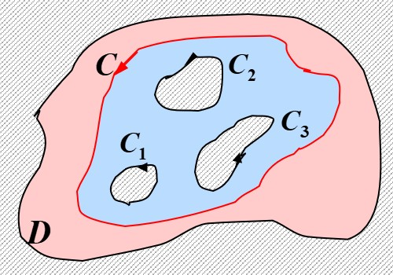
$\displaystyle \oint_{\Gamma}f(z)\dif z=0$, where $\displaystyle \Gamma=C+C_1^-+C_2^-+\cdots+C_n^-$ is the composite closed curve formed by $\displaystyle C$ (counterclockwise) and all the $\displaystyle C_k$ (clockwise), i.e. the positively oriented boundary of the region.
The proof is the same as for the principle of deformation of paths: cut the region into simply connected pieces.
Examples
Compute $\displaystyle \oint_{\Gamma}\frac{2z-1}{z^2-z}\dif z$, where $\displaystyle \Gamma$ is any positively oriented simple closed curve enclosing the closed disk $\displaystyle \abs{z}\leq 1$.
The function $\displaystyle \frac{2z-1}{z^2-z}=\frac{2z-1}{z(z-1)}$ has two singular points, $\displaystyle z=0$ and $\displaystyle z=1$, and both lie inside $\displaystyle \Gamma$.
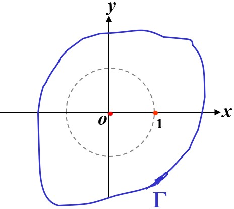
Inside $\displaystyle \Gamma$, draw two counterclockwise circles $\displaystyle C_1$ and $\displaystyle C_2$ that neither intersect nor contain each other, with $\displaystyle C_1$ enclosing only $\displaystyle z=0$ and $\displaystyle C_2$ enclosing only $\displaystyle z=1$. Note that $\displaystyle \frac{2z-1}{z^2-z}=\frac{1}{z}+\frac{1}{z-1}$.
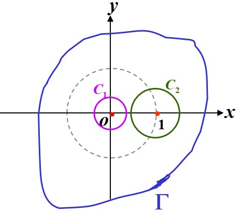
By Cauchy's theorem for multiply connected domains, \[\begin{aligned} \oint_{\Gamma}\frac{2z-1}{z^2-z}\dif z & =\oint_{C_1}\frac{2z-1}{z^2-z}\dif z+\oint_{C_2}\frac{2z-1}{z^2-z}\dif z \\ & =\oint_{C_1}\frac{\dif z}{z}+\oint_{C_1}\frac{\dif z}{z-1}+\oint_{C_2}\frac{\dif z}{z}+\oint_{C_2}\frac{\dif z}{z-1} \\ & =2\pi i+0+0+2\pi i=4\pi i. \end{aligned}\]
Compute $\displaystyle \oint_{\Gamma}\frac{e^z}{z}\dif z$, where $\displaystyle \Gamma$ consists of the counterclockwise circle $\displaystyle C_1:\abs{z}=2$ and the clockwise circle $\displaystyle C_2:\abs{z}=1$.
$\displaystyle C_1$ and $\displaystyle C_2$ bound the annulus $\displaystyle 1<\abs{z}<2$, and $\displaystyle \Gamma$ is its positively oriented boundary (a composite closed curve). The function $\displaystyle \frac{e^z}{z}$ is analytic on the closed annulus $\displaystyle 1\leq\abs{z}\leq2$ (its only singular point $\displaystyle z=0$ lies outside).
By Cauchy's theorem for multiply connected domains, $\displaystyle \oint_{\Gamma}\frac{e^z}{z}\dif z=0$.
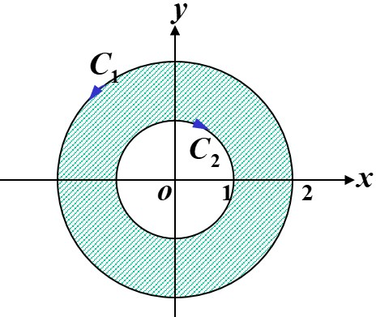
Compute $\displaystyle \oint_{\Gamma}\frac{1}{(z-a)^{n+1}}\dif z$, where $\displaystyle \Gamma$ is any positively oriented simple closed curve enclosing $\displaystyle a$, and $\displaystyle n$ is an integer.
Since $\displaystyle a$ lies inside $\displaystyle \Gamma$, we can choose $\displaystyle \rho>0$ so small that the circle $\displaystyle \Gamma_1:\abs{z-a}=\rho$ lies inside $\displaystyle \Gamma$.
The function $\displaystyle \frac{1}{(z-a)^{n+1}}$ is analytic in the region bounded by $\displaystyle \Gamma$ and $\displaystyle \Gamma_1$ and on its boundary.
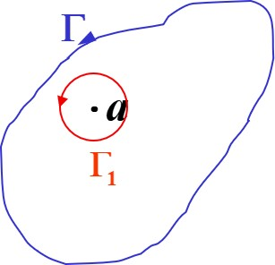
By Cauchy's theorem for multiply connected domains, and with $\displaystyle z=a+\rho e^{i\theta}$ $\displaystyle (0\leq\theta\leq 2\pi)$ on $\displaystyle \Gamma_1$, \[\begin{aligned} \oint_{\Gamma}\frac{\dif z}{(z-a)^{n+1}} & =\oint_{\Gamma_1}\frac{\dif z}{(z-a)^{n+1}}=\int_{0}^{2\pi}\frac{i\rho e^{i\theta}}{(\rho e^{i\theta})^{n+1}}\dif\theta \\ & =\frac{i}{\rho^n}\int_{0}^{2\pi}e^{-in\theta}\dif\theta. \end{aligned}\] So, as in Example 1.4, \[\boxed{\oint_{\Gamma}\frac{1}{(z-a)^{n+1}}\dif z=\begin{cases} 2\pi i, & n=0, \\ 0, & n\neq 0. \end{cases}}\]
This result is very convenient: $\displaystyle \Gamma$ need not be a circle and $\displaystyle a$ need not be a center; it is enough that $\displaystyle a$ lies inside $\displaystyle \Gamma$.
Compute $\displaystyle \frac{1}{2\pi i}\oint_{\Gamma}\frac{1}{(z-z_0)^n}\dif z$, where $\displaystyle \Gamma$ is any positively oriented simple closed curve enclosing $\displaystyle z_0$, and $\displaystyle n$ is a positive integer.
By the previous example with $\displaystyle a=z_0$ and $\displaystyle n$ replaced by $\displaystyle n-1$, \[\oint_{\Gamma}\frac{1}{(z-z_0)^{n}}\dif z=\begin{cases} 2\pi i, & n-1=0, \\ 0, & n-1\neq 0. \end{cases}\] Hence \[\frac{1}{2\pi i}\oint_{\Gamma}\frac{1}{(z-z_0)^n}\dif z=\begin{cases} 1, & n=1, \\ 0, & n\neq 1. \end{cases}\]
Prove that $\displaystyle \oint_C (z-\alpha)^n\dif z=0$ for every integer $\displaystyle n\neq-1$, where $\displaystyle C$ is any simple closed curve not passing through $\displaystyle \alpha$.
If $\displaystyle n\geq 0$, $\displaystyle (z-\alpha)^n$ is a polynomial, analytic in the whole plane, so $\displaystyle \oint_C (z-\alpha)^n\dif z=0$ by Cauchy's theorem.
If $\displaystyle n\leq -2$ and $\displaystyle \alpha$ lies outside $\displaystyle C$, then $\displaystyle (z-\alpha)^n$ is analytic on and inside $\displaystyle C$, so the integral is again $\displaystyle 0$.
If $\displaystyle n\leq -2$ and $\displaystyle \alpha$ lies inside $\displaystyle C$, write $\displaystyle (z-\alpha)^n=\frac{1}{(z-\alpha)^{m+1}}$ with $\displaystyle m=-n-1\geq 1$. Since $\displaystyle m\neq 0$, Example 3.3 gives $\displaystyle \oint_C (z-\alpha)^n\dif z=0$.
Summary and Thinking
Cauchy's theorem is the core of complex integration; mastering it and applying it flexibly is the main difficulty of this chapter.
A frequently used result: \[\oint_{\Gamma}\frac{1}{(z-a)^{n+1}}\dif z=\begin{cases}
2\pi i, & n=0, \\
0, & n\neq 0,
\end{cases}\] where $\displaystyle \Gamma$ is any positively oriented simple closed curve enclosing $\displaystyle a$.
How is Cauchy's theorem for multiply connected domains used in computing integrals? What should we pay attention to?
It is the main tool for integrals along closed curves: a complicated closed curve can be replaced by small circles around the singular points inside it, and the integral splits into integrals along these circles.
Pay attention to the directions of the curves: the outer boundary is counterclockwise and the inner boundaries are clockwise.
Main Theorems and Definitions
Two Main Theorems
If $\displaystyle f(z)$ is analytic in a simply connected domain $\displaystyle B$, then the integral $\displaystyle \int_C f(z)\dif z$ along a curve $\displaystyle C$ in $\displaystyle B$ depends only on the initial point and the terminal point of $\displaystyle C$, not on the path.
Let $\displaystyle C_1$ and $\displaystyle C_2$ be two paths in $\displaystyle B$ from $\displaystyle z_0$ to $\displaystyle z_1$. Then $\displaystyle C_1+C_2^-$ is a closed curve in $\displaystyle B$, so by Cauchy's theorem \[\int_{C_1}f(z)\dif z-\int_{C_2}f(z)\dif z=\oint_{C_1+C_2^-}f(z)\dif z=0.\]
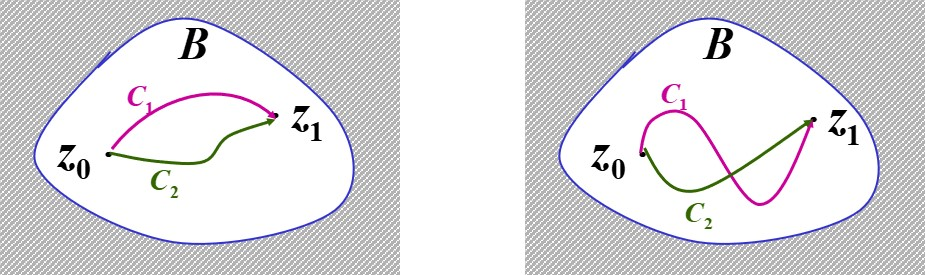
So we may write \[\int_{C_1}f(z)\dif z=\int_{C_2}f(z)\dif z=\int_{z_0}^{z_1}f(z)\dif z.\] If $\displaystyle z_0$ is fixed and $\displaystyle z_1=z$ varies in $\displaystyle B$, this defines a single-valued function in $\displaystyle B$: \[F(z)=\int_{z_0}^{z}f(\zeta)\dif\zeta.\]
If $\displaystyle f(z)$ is analytic in a simply connected domain $\displaystyle B$, then $\displaystyle F(z)=\int_{z_0}^{z}f(\zeta)\dif\zeta$ is analytic in $\displaystyle B$, and $\displaystyle F'(z)=f(z)$.
We use the definition of the derivative.
Let $\displaystyle z$ be any point of $\displaystyle B$, and let $\displaystyle K$ be a small disk centered at $\displaystyle z$ and contained in $\displaystyle B$.
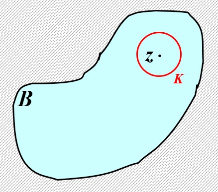
Take $\displaystyle \abs{\Delta z}$ so small that $\displaystyle z+\Delta z$ lies in $\displaystyle K$. By the definition of $\displaystyle F$, \[F(z+\Delta z)-F(z)=\int_{z_0}^{z+\Delta z}f(\zeta)\dif\zeta-\int_{z_0}^{z}f(\zeta)\dif\zeta.\]
Since the integrals do not depend on the path, we let the path of $\displaystyle \int_{z_0}^{z+\Delta z}$ go from $\displaystyle z_0$ to $\displaystyle z$ along the path of $\displaystyle \int_{z_0}^{z}$, and then from $\displaystyle z$ to $\displaystyle z+\Delta z$ along the line segment.
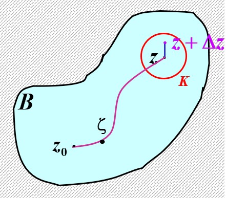
Then $\displaystyle F(z+\Delta z)-F(z)=\int_{z}^{z+\Delta z}f(\zeta)\dif\zeta$.
Since $\displaystyle f(z)$ does not depend on $\displaystyle \zeta$, $\displaystyle \int_{z}^{z+\Delta z}f(z)\dif\zeta=f(z)\int_{z}^{z+\Delta z}\dif\zeta=f(z)\Delta z$. Hence \[\begin{aligned} \frac{F(z+\Delta z)-F(z)}{\Delta z}-f(z) & =\frac{1}{\Delta z}\left[\int_z^{z+\Delta z}f(\zeta)\dif\zeta-f(z)\Delta z\right] \\ & =\frac{1}{\Delta z}\int_{z}^{z+\Delta z}\big[f(\zeta)-f(z)\big]\dif\zeta. \end{aligned}\]
Since $\displaystyle f(z)$ is analytic in $\displaystyle B$, it is continuous at $\displaystyle z$: for every $\displaystyle \varepsilon>0$ there is $\displaystyle \delta>0$ (with the disk $\displaystyle \abs{\zeta-z}<\delta$ inside $\displaystyle K$) such that $\displaystyle \abs{f(\zeta)-f(z)}<\varepsilon$ whenever $\displaystyle \abs{\zeta-z}<\delta$.
If $\displaystyle \abs{\Delta z}<\delta$, every point $\displaystyle \zeta$ of the segment from $\displaystyle z$ to $\displaystyle z+\Delta z$ satisfies $\displaystyle \abs{\zeta-z}<\delta$, and the segment has length $\displaystyle \abs{\Delta z}$. By the integral estimation inequality, \[\begin{aligned} \abs{\frac{F(z+\Delta z)-F(z)}{\Delta z}-f(z)} & =\frac{1}{\abs{\Delta z}}\abs{\int_{z}^{z+\Delta z}\big[f(\zeta)-f(z)\big]\dif\zeta} \\ & \leq\frac{1}{\abs{\Delta z}}\cdot\varepsilon\cdot\abs{\Delta z}=\varepsilon. \end{aligned}\]
Therefore \[\lim_{\Delta z\to 0}\frac{F(z+\Delta z)-F(z)}{\Delta z}=f(z),\] that is, $\displaystyle F'(z)=f(z)$ for every $\displaystyle z\in B$, and $\displaystyle F(z)$ is analytic in $\displaystyle B$.
This theorem is the complex analogue of the fundamental theorem of calculus, $\displaystyle \frac{\dif}{\dif x}\int_a^x f(t)\dif t=f(x)$.
Note that the proof used only two facts: $\displaystyle f$ is continuous, and its integrals in $\displaystyle B$ do not depend on the path. (We will use this in Morera's theorem.)
Antiderivatives
If $\displaystyle \varphi'(z)=f(z)$ in a domain $\displaystyle B$, then $\displaystyle \varphi(z)$ is called an antiderivative（原函数） of $\displaystyle f(z)$ in $\displaystyle B$.
By Theorem 4.2, $\displaystyle F(z)=\int_{z_0}^{z}f(\zeta)\dif\zeta$ is an antiderivative of $\displaystyle f(z)$.
Any two antiderivatives of $\displaystyle f(z)$ differ by a constant.
Let $\displaystyle G(z)$ and $\displaystyle H(z)$ be two antiderivatives of $\displaystyle f(z)$. Then \[\big[G(z)-H(z)\big]'=G'(z)-H'(z)=f(z)-f(z)\equiv 0,\] so $\displaystyle G(z)-H(z)=c$ for some constant $\displaystyle c$ (a function with zero derivative in a domain is constant).
Hence, if $\displaystyle f(z)$ has an antiderivative $\displaystyle F(z)$ in $\displaystyle B$, it has infinitely many antiderivatives $\displaystyle F(z)+c$ ($\displaystyle c$ an arbitrary constant).
Indefinite Integrals
The set of all antiderivatives $\displaystyle F(z)+c$ ($\displaystyle c$ an arbitrary constant) of $\displaystyle f(z)$ is called the indefinite integral（不定积分） of $\displaystyle f(z)$, written as \[\int f(z)\dif z=F(z)+c.\]
If $\displaystyle f(z)$ is analytic in a simply connected domain $\displaystyle B$ and $\displaystyle F(z)$ is an antiderivative of $\displaystyle f(z)$, then for any $\displaystyle z_0,z_1\in B$, \[\int_{z_0}^{z_1}f(z)\dif z=F(z_1)-F(z_0).\]
By Theorem 4.2, $\displaystyle \int_{z_0}^{z}f(\zeta)\dif\zeta$ is an antiderivative of $\displaystyle f(z)$, so \[\int_{z_0}^{z}f(\zeta)\dif\zeta=F(z)+c.\] Setting $\displaystyle z=z_0$, the left-hand side is $\displaystyle 0$, so $\displaystyle c=-F(z_0)$. Hence $\displaystyle \int_{z_0}^{z}f(\zeta)\dif\zeta=F(z)-F(z_0)$, and with $\displaystyle z=z_1$, \[\int_{z_0}^{z_1}f(z)\dif z=F(z_1)-F(z_0).\]
With this theorem, integrals of analytic functions can be computed exactly as in calculus: find an antiderivative and substitute the endpoints.
Examples
Compute $\displaystyle \int_{z_0}^{z_1}z\dif z$.
$\displaystyle f(z)=z$ is analytic in the whole plane, and $\displaystyle \frac{1}{2}z^2$ is an antiderivative. By the Newton–Leibniz formula, \[\int_{z_0}^{z_1}z\dif z=\left.\frac{1}{2}z^2\right|_{z_0}^{z_1}=\frac{1}{2}(z_1^2-z_0^2).\] (Compare Example 1.1: $\displaystyle \frac{1}{2}(3+4i)^2$ is the case $\displaystyle z_0=0$, $\displaystyle z_1=3+4i$.)
Compute $\displaystyle \int_{0}^{\pi i}z\cos z^2\dif z$.
$\displaystyle z\cos z^2$ is analytic in the whole plane, so \[\begin{aligned} \int_{0}^{\pi i}z\cos z^2\dif z & =\frac{1}{2}\int_{0}^{\pi i}\cos z^2\dif (z^2)=\left.\frac{1}{2}\sin z^2\right|_{0}^{\pi i} \\ & =\frac{1}{2}\sin(-\pi^2)=-\frac{1}{2}\sin\pi^2. \end{aligned}\]
Compute $\displaystyle \int_{1}^{1+i}ze^z\dif z$.
By integration by parts, $\displaystyle \int ze^z\dif z=ze^z-\int e^z\dif z=(z-1)e^z+c$, so $\displaystyle (z-1)e^z$ is an antiderivative of $\displaystyle ze^z$, and \[\int_{1}^{1+i}ze^z\dif z=(z-1)e^z\Big|_{1}^{1+i}=ie^{1+i}=ie(\cos 1+i\sin 1).\]
Compute $\displaystyle \int_{1}^{i}\frac{\ln(z+1)}{z+1}\dif z$ along the arc of the circle $\displaystyle \abs{z}=1$ in the first quadrant ($\displaystyle \operatorname{Re}z\geq 0$, $\displaystyle \operatorname{Im}z\geq 0$), where $\displaystyle \ln$ denotes the principal value.
The path lies in the half-plane $\displaystyle \operatorname{Re}z>-1$, a simply connected domain in which $\displaystyle \frac{\ln(z+1)}{z+1}$ is analytic and has the antiderivative $\displaystyle \frac{1}{2}\ln^2(z+1)$.
Since $\displaystyle \ln 2$ is real and $\displaystyle \ln(1+i)=\ln\sqrt{2}+i\arg(1+i)=\frac{1}{2}\ln 2+\frac{\pi}{4}i$, \[\begin{aligned} \int_{1}^{i}\frac{\ln(z+1)}{z+1}\dif z & =\left.\frac{\ln^2(z+1)}{2}\right|_{1}^{i}=\frac{1}{2}\big[\ln^2 (1+i)-\ln^2 2\big] \\ & =\frac{1}{2}\left[\left(\frac{1}{2}\ln 2+\frac{\pi}{4}i\right)^2-\ln^2 2\right] \\ & =-\frac{\pi^2}{32}-\frac{3}{8}\ln^2 2+\frac{\pi\ln 2}{8}i. \end{aligned}\]
Summary and Thinking
This part introduced antiderivatives and the Newton–Leibniz formula for analytic functions. Compare them with the corresponding results in calculus to understand them better. \[\textcolor{blue}{F(z)=\int_{z_0}^{z}f(\zeta)\dif\zeta,\qquad \int f(z)\dif z=F(z)+c,}\] \[\textcolor{blue}{\int_{z_0}^{z_1}f(z)\dif z=F(z_1)-F(z_0).}\]
What are the similarities and differences between the Newton–Leibniz formula for analytic functions in a simply connected domain and the Newton–Leibniz formula for definite integrals of real functions?
The statements and the results are similar.
In complex integration, $\displaystyle f(z)$ must be analytic in a simply connected domain; the endpoints $\displaystyle z_0$, $\displaystyle z_1$ are complex numbers, and the path is a curve $\displaystyle C$ in the domain.
In real integration, $\displaystyle f(x)$ need only be continuous on the interval $\displaystyle [a,b]$; the endpoints $\displaystyle a$, $\displaystyle b$ are real numbers.
The requirements on the function differ greatly: analytic versus continuous.
Motivation
Let $\displaystyle B$ be a simply connected domain, $\displaystyle z_0\in B$, and let $\displaystyle f(z)$ be analytic in $\displaystyle B$. Then $\displaystyle \frac{f(z)}{z-z_0}$ is in general not analytic at $\displaystyle z_0$, so $\displaystyle \oint_C \frac{f(z)}{z-z_0}\dif z$ is in general not zero, where $\displaystyle C$ is a closed curve in $\displaystyle B$ around $\displaystyle z_0$.
By the principle of deformation of paths, the value does not change when $\displaystyle C$ is deformed. So take $\displaystyle C$ to be the small circle $\displaystyle \abs{z-z_0}=\delta$.
Since $\displaystyle f(z)$ is continuous, its values on $\displaystyle C$ approach $\displaystyle f(z_0)$ as $\displaystyle \delta\to0$, so we expect \[\oint_C \frac{f(z)}{z-z_0}\dif z=\oint_C \frac{f(z_0)}{z-z_0}\dif z=f(z_0)\oint_C \frac{1}{z-z_0}\dif z=2\pi if(z_0).\]
Cauchy's Integral Formula
Let $\displaystyle f(z)$ be analytic in a domain $\displaystyle D$, and let $\displaystyle C$ be a positively oriented simple closed curve in $\displaystyle D$ whose interior lies entirely in $\displaystyle D$. Then for every point $\displaystyle z_0$ inside $\displaystyle C$,
\[f(z_0)=\frac{1}{2\pi i}\oint_C \frac{f(z)}{z-z_0}\dif z.\] This is Cauchy's integral formula（柯西积分公式）.
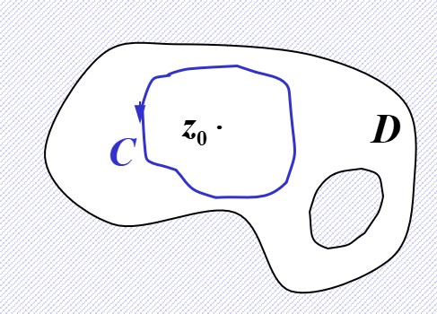
Since $\displaystyle f(z)$ is continuous at $\displaystyle z_0$, for every $\displaystyle \varepsilon>0$ there is $\displaystyle \delta>0$ such that $\displaystyle \abs{f(z)-f(z_0)}<\varepsilon$ whenever $\displaystyle \abs{z-z_0}<\delta$.
Let $\displaystyle K:\abs{z-z_0}=R$ be a positively oriented circle with $\displaystyle R<\delta$, lying inside $\displaystyle C$. By the principle of deformation of paths and Example 1.4,
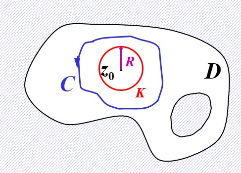
\[\begin{aligned} \oint_C \frac{f(z)}{z-z_0}\dif z & =\oint_K \frac{f(z)}{z-z_0}\dif z=\oint_K \frac{f(z_0)}{z-z_0}\dif z+\oint_K \frac{f(z)-f(z_0)}{z-z_0}\dif z \\ & =2\pi if(z_0)+\oint_K \frac{f(z)-f(z_0)}{z-z_0}\dif z. \end{aligned}\]
On $\displaystyle K$ we have $\displaystyle \abs{z-z_0}=R$ and $\displaystyle \abs{f(z)-f(z_0)}<\varepsilon$, so by the estimation inequality \[\abs{\oint_K \frac{f(z)-f(z_0)}{z-z_0}\dif z}\leq\oint_K \frac{\abs{f(z)-f(z_0)}}{\abs{z-z_0}}\dif s<\frac{\varepsilon}{R}\cdot 2\pi R=2\pi\varepsilon.\] By the previous slide this integral equals $\displaystyle \oint_C \frac{f(z)}{z-z_0}\dif z-2\pi if(z_0)$, which does not depend on $\displaystyle K$. A fixed number whose modulus is less than $\displaystyle 2\pi\varepsilon$ for every $\displaystyle \varepsilon>0$ must be $\displaystyle 0$. Hence \[\oint_C \frac{f(z)}{z-z_0}\dif z=2\pi if(z_0).\]
Remarks on Cauchy's integral formula:
The value of an analytic function at any point inside $\displaystyle C$ is determined by its values on the boundary $\displaystyle C$. (Another special property of analytic functions.)
The formula gives a way to compute certain integrals along closed curves, and it also gives an integral representation of analytic functions. (A powerful tool for studying analytic functions.)
Mean value formula（平均值公式）: the value of an analytic function at the center of a circle equals its average over the circle. Indeed, for $\displaystyle C:z=z_0+Re^{i\theta}$ we have $\displaystyle \dif z=iRe^{i\theta}\dif\theta$, so \[\begin{aligned} f(z_0) & =\frac{1}{2\pi i}\int_0^{2\pi}\frac{f(z_0+Re^{i\theta})}{Re^{i\theta}}\,iRe^{i\theta}\dif\theta \\ & =\frac{1}{2\pi}\int_{0}^{2\pi}f(z_0+Re^{i\theta})\dif\theta. \end{aligned}\]
Examples
Compute $\displaystyle \oint_{\abs{z}=2}\frac{e^z}{z-1}\dif z$.
$\displaystyle e^z$ is analytic in the whole plane and $\displaystyle z=1$ lies inside $\displaystyle \abs{z}=2$. By Cauchy's integral formula with $\displaystyle f(z)=e^z$ and $\displaystyle z_0=1$, \[\oint_{\abs{z}=2}\frac{e^z}{z-1}\dif z=2\pi i\cdot e^z\big|_{z=1}=2\pi ei.\]
Compute $\displaystyle \oint_{\abs{z-i}=\frac{1}{2}}\frac{1}{z(z^2+1)}\dif z$ again, this time by Cauchy's integral formula.
Write $\displaystyle \frac{1}{z(z^2+1)}=\frac{f(z)}{z-i}$ with $\displaystyle f(z)=\frac{1}{z(z+i)}$. $\displaystyle f(z)$ is analytic on and inside $\displaystyle \abs{z-i}=\frac{1}{2}$, and $\displaystyle z_0=i$ lies inside the circle, so \[\begin{aligned} \oint_{\abs{z-i}=\frac{1}{2}}\frac{\dif z}{z(z^2+1)} & =\oint_{\abs{z-i}=\frac{1}{2}}\frac{\frac{1}{z(z+i)}}{z-i}\dif z=2\pi i\cdot\left.\frac{1}{z(z+i)}\right|_{z=i} \\ & =2\pi i\cdot\frac{1}{2i^2}=-\pi i, \end{aligned}\] which agrees with Example 2.2.
Let $\displaystyle C$ be the positively oriented circle $\displaystyle x^2+y^2=3$ and $\displaystyle f(z)=\oint_C\frac{3\xi^2+7\xi+1}{\xi-z}\dif\xi$. Find $\displaystyle f'(1+i)$.
For $\displaystyle z$ inside $\displaystyle C$, Cauchy's integral formula (with $\displaystyle \xi$ as the integration variable) gives \[f(z)=2\pi i\,(3\xi^2+7\xi+1)\big|_{\xi=z}=2\pi i(3z^2+7z+1).\] So $\displaystyle f'(z)=2\pi i(6z+7)$ inside $\displaystyle C$. Since $\displaystyle \abs{1+i}=\sqrt{2}<\sqrt{3}$, the point $\displaystyle 1+i$ lies inside $\displaystyle C$, and \[f'(1+i)=2\pi i(13+6i)=2\pi(-6+13i).\]
Compute $\displaystyle \oint_{C}\frac{\sin\frac{\pi z}{4}}{z^2-1}\dif z$, where $\displaystyle C$ is (1) $\displaystyle \abs{z+1}=\frac{1}{2}$; (2) $\displaystyle \abs{z-1}=\frac{1}{2}$; (3) $\displaystyle \abs{z}=2$.
Only $\displaystyle z=-1$ lies inside $\displaystyle C$, and $\displaystyle \frac{\sin\frac{\pi z}{4}}{z-1}$ is analytic on and inside $\displaystyle C$: \[\begin{aligned} \oint_{\abs{z+1}=\frac{1}{2}}\frac{\sin\frac{\pi z}{4}}{z^2-1}\dif z & =\oint_{\abs{z+1}=\frac{1}{2}}\frac{\frac{\sin\frac{\pi z}{4}}{z-1}}{z+1}\dif z=2\pi i\cdot\left.\frac{\sin\frac{\pi z}{4}}{z-1}\right|_{z=-1} \\ & =2\pi i\cdot\frac{-\frac{\sqrt{2}}{2}}{-2}=\frac{\sqrt{2}}{2}\pi i. \end{aligned}\]
Only $\displaystyle z=1$ lies inside $\displaystyle C$: \[\begin{aligned} \oint_{\abs{z-1}=\frac{1}{2}}\frac{\sin\frac{\pi z}{4}}{z^2-1}\dif z & =\oint_{\abs{z-1}=\frac{1}{2}}\frac{\frac{\sin\frac{\pi z}{4}}{z+1}}{z-1}\dif z=2\pi i\cdot\left.\frac{\sin\frac{\pi z}{4}}{z+1}\right|_{z=1} \\ & =2\pi i\cdot\frac{\frac{\sqrt{2}}{2}}{2}=\frac{\sqrt{2}}{2}\pi i. \end{aligned}\]
Both $\displaystyle z=\pm1$ lie inside $\displaystyle \abs{z}=2$. By Cauchy's theorem for multiply connected domains and parts (1), (2), \[\begin{aligned} \oint_{\abs{z}=2}\frac{\sin\frac{\pi z}{4}}{z^2-1}\dif z & =\oint_{\abs{z+1}=\frac{1}{2}}\frac{\sin\frac{\pi z}{4}}{z^2-1}\dif z+\oint_{\abs{z-1}=\frac{1}{2}}\frac{\sin\frac{\pi z}{4}}{z^2-1}\dif z \\ & =\frac{\sqrt{2}}{2}\pi i+\frac{\sqrt{2}}{2}\pi i=\sqrt{2}\pi i. \end{aligned}\]
Compute $\displaystyle \oint_{\abs{z}=1}\frac{e^z}{z}\dif z$, and use the result to prove \[\int_0^\pi e^{\cos\theta}\cos(\sin\theta)\dif\theta=\pi.\]
By Cauchy's integral formula, \[\oint_{\abs{z}=1}\frac{e^z}{z}\dif z=2\pi i\cdot e^z\big|_{z=0}=2\pi i.\] On the other hand, parametrize the circle by $\displaystyle z=e^{i\theta}$ $\displaystyle (-\pi\leq\theta\leq\pi)$, so $\displaystyle \dif z=ie^{i\theta}\dif\theta$.
Since $\displaystyle e^{e^{i\theta}}=e^{\cos\theta+i\sin\theta}=e^{\cos\theta}\big[\cos(\sin\theta)+i\sin(\sin\theta)\big]$, \[\begin{aligned} \oint_{\abs{z}=1}\frac{e^z}{z}\dif z & =\int_{-\pi}^{\pi}\frac{e^{e^{i\theta}}}{e^{i\theta}}\cdot ie^{i\theta}\dif\theta=i\int_{-\pi}^{\pi}e^{e^{i\theta}}\dif\theta \\ & =i\int_{-\pi}^{\pi}e^{\cos\theta}\cos(\sin\theta)\dif\theta-\underbrace{\int_{-\pi}^{\pi}e^{\cos\theta}\sin(\sin\theta)\dif\theta}_{=0\text{ (odd integrand)}} \\ & =2i\int_{0}^{\pi}e^{\cos\theta}\cos(\sin\theta)\dif\theta\qquad\text{(even integrand)}. \end{aligned}\] Comparing with $\displaystyle \oint_{\abs{z}=1}\frac{e^z}{z}\dif z=2\pi i$ gives $\displaystyle \int_{0}^{\pi}e^{\cos\theta}\cos(\sin\theta)\dif\theta=\pi$.
Summary and Thinking
Cauchy's integral formula: \[f(z_0)=\frac{1}{2\pi i}\oint_C \frac{f(z)}{z-z_0}\dif z,\quad\text{i.e.}\quad \oint_C \frac{f(z)}{z-z_0}\dif z=2\pi if(z_0).\] The second form is the one used to compute integrals: split off the factor $\displaystyle \frac{1}{z-z_0}$ whose zero of the denominator lies inside $\displaystyle C$, and check that the remaining factor $\displaystyle f(z)$ is analytic on and inside $\displaystyle C$.
Main Theorem
The derivative of an analytic function is again analytic. Its $\displaystyle n$th-order derivative is given by the higher-order derivative formula（高阶导数公式） \[f^{(n)}(z_0)=\frac{n!}{2\pi i}\oint_C \frac{f(z)}{(z-z_0)^{n+1}}\dif z,\quad n=1,2,\cdots,\] where $\displaystyle C$ is any positively oriented simple closed curve which, together with its interior, lies in the domain $\displaystyle D$ where $\displaystyle f(z)$ is analytic, and $\displaystyle z_0$ is any point inside $\displaystyle C$.
Formally, it is obtained by differentiating Cauchy's integral formula $\displaystyle n$ times with respect to $\displaystyle z_0$ under the integral sign.
First consider $\displaystyle n=1$, i.e. we prove \[f'(z_0)=\frac{1}{2\pi i}\oint_C \frac{f(z)}{(z-z_0)^2}\dif z.\] By the definition of the derivative, \[f'(z_0)=\lim_{\Delta z\to 0}\frac{f(z_0+\Delta z)-f(z_0)}{\Delta z}.\] By Cauchy's integral formula (for $\displaystyle \abs{\Delta z}$ small, $\displaystyle z_0+\Delta z$ is also inside $\displaystyle C$), \[f(z_0)=\frac{1}{2\pi i}\oint_C \frac{f(z)}{z-z_0}\dif z,\qquad f(z_0+\Delta z)=\frac{1}{2\pi i}\oint_C \frac{f(z)}{z-z_0-\Delta z}\dif z.\]
Thus \[\begin{aligned} \frac{f(z_0+\Delta z)-f(z_0)}{\Delta z} & =\frac{1}{2\pi i\Delta z}\left[\oint_C \frac{f(z)}{z-z_0-\Delta z}\dif z-\oint_C \frac{f(z)}{z-z_0}\dif z\right] \\ & =\frac{1}{2\pi i}\oint_C \frac{f(z)}{(z-z_0)(z-z_0-\Delta z)}\dif z \\ & =\frac{1}{2\pi i}\oint_C \frac{f(z)}{(z-z_0)^2}\dif z+I, \end{aligned}\] where \[I=\frac{1}{2\pi i}\oint_C \frac{\Delta z\,f(z)}{(z-z_0)^2(z-z_0-\Delta z)}\dif z.\] It remains to show that $\displaystyle I\to0$ as $\displaystyle \Delta z\to0$.
Since $\displaystyle f(z)$ is analytic, it is continuous on $\displaystyle C$ and hence bounded: $\displaystyle \abs{f(z)}\leq M$ on $\displaystyle C$ for some $\displaystyle M>0$.
Let $\displaystyle d$ be the shortest distance from $\displaystyle z_0$ to the points of $\displaystyle C$, and take $\displaystyle \abs{\Delta z}<\frac{1}{2}d$.
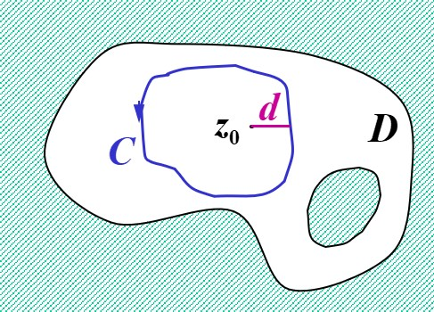
Then for $\displaystyle z$ on $\displaystyle C$, \[\abs{z-z_0}\geq d,\qquad \abs{z-z_0-\Delta z}\geq\abs{z-z_0}-\abs{\Delta z}>\frac{d}{2}.\]
Hence, on $\displaystyle C$, \[\frac{\abs{\Delta z}\,\abs{f(z)}}{\abs{z-z_0}^2\,\abs{z-z_0-\Delta z}}<\frac{\abs{\Delta z}\,M}{d^2\cdot\frac{d}{2}}=\frac{2M}{d^3}\abs{\Delta z}.\]
By the integral estimation inequality, \[\abs{I}\leq\frac{1}{2\pi}\oint_C \frac{\abs{\Delta z}\,\abs{f(z)}}{\abs{z-z_0}^2\,\abs{z-z_0-\Delta z}}\dif s<\frac{1}{2\pi}\cdot\frac{2M}{d^3}\abs{\Delta z}\cdot L=\abs{\Delta z}\frac{ML}{\pi d^3},\] where $\displaystyle L$ is the length of $\displaystyle C$. So $\displaystyle I\to0$ as $\displaystyle \Delta z\to 0$, and \[f'(z_0)=\lim_{\Delta z\to 0}\frac{f(z_0+\Delta z)-f(z_0)}{\Delta z}=\frac{1}{2\pi i}\oint_C \frac{f(z)}{(z-z_0)^2}\dif z.\] Applying the same method to $\displaystyle \lim_{\Delta z\to 0}\frac{f'(z_0+\Delta z)-f'(z_0)}{\Delta z}$, we obtain \[f''(z_0)=\frac{2!}{2\pi i}\oint_C \frac{f(z)}{(z-z_0)^3}\dif z.\]
In the same way, mathematical induction gives \[f^{(n)}(z_0)=\frac{n!}{2\pi i}\oint_C \frac{f(z)}{(z-z_0)^{n+1}}\dif z.\]
In practice the formula is used in the opposite direction: not to find derivatives by integration, but to find integrals by differentiation: \[\oint_C \frac{f(z)}{(z-z_0)^{n+1}}\dif z=\frac{2\pi i}{n!}f^{(n)}(z_0).\]
Examples
Compute the following integrals, where $\displaystyle C:\abs{z}=r>1$ is counterclockwise:
(1) $\displaystyle \oint_C \frac{\cos\pi z}{(z-1)^5}\dif z$; (2) $\displaystyle \oint_C \frac{e^z}{(z^2+1)^2}\dif z$.
$\displaystyle \frac{\cos\pi z}{(z-1)^5}$ is not analytic at $\displaystyle z=1$ inside $\displaystyle C$, but $\displaystyle \cos\pi z$ is analytic on and inside $\displaystyle C$. By the higher-order derivative formula with $\displaystyle n=4$, \[\oint_C \frac{\cos\pi z}{(z-1)^5}\dif z=\frac{2\pi i}{4!}(\cos\pi z)^{(4)}\Big|_{z=1}=\frac{2\pi i}{24}\pi^4\cos\pi=-\frac{\pi^5 i}{12}.\]
$\displaystyle \frac{e^z}{(z^2+1)^2}$ is not analytic at $\displaystyle z=\pm i$, both inside $\displaystyle C$.
Inside $\displaystyle C$, draw small counterclockwise circles $\displaystyle C_1$ and $\displaystyle C_2$ centered at $\displaystyle z=i$ and $\displaystyle z=-i$, which neither intersect nor contain each other.
The function $\displaystyle \frac{e^z}{(z^2+1)^2}$ is analytic in the region bounded by $\displaystyle C$, $\displaystyle C_1$, and $\displaystyle C_2$ and on its boundary.
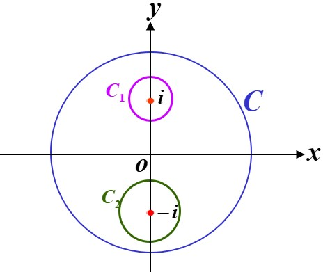
By Cauchy's theorem for multiply connected domains, \[\oint_C \frac{e^z}{(z^2+1)^2}\dif z=\oint_{C_1} \frac{e^z}{(z^2+1)^2}\dif z+\oint_{C_2} \frac{e^z}{(z^2+1)^2}\dif z.\] By the higher-order derivative formula with $\displaystyle n=1$, and $\displaystyle \left[\frac{e^z}{(z+i)^2}\right]'=\frac{(z+i-2)e^z}{(z+i)^3}$, \[\begin{aligned} \oint_{C_1} \frac{e^z}{(z^2+1)^2}\dif z & =\oint_{C_1} \frac{\frac{e^z}{(z+i)^2}}{(z-i)^2}\dif z=\frac{2\pi i}{1!}\left.\left[\frac{e^z}{(z+i)^2}\right]'\right|_{z=i} \\ & =2\pi i\cdot\frac{(2i-2)e^i}{(2i)^3}=\frac{(1-i)e^i}{2}\pi. \end{aligned}\]
Similarly, \[\begin{aligned} \oint_{C_2} \frac{e^z}{(z^2+1)^2}\dif z & =\oint_{C_2} \frac{\frac{e^z}{(z-i)^2}}{(z+i)^2}\dif z=\frac{2\pi i}{1!}\left.\left[\frac{e^z}{(z-i)^2}\right]'\right|_{z=-i} \\ & =-\frac{(1+i)e^{-i}}{2}\pi. \end{aligned}\] So, using $\displaystyle 1+i=i(1-i)$ and $\displaystyle e^i-ie^{-i}=(1-i)(\cos 1-\sin 1)$, \[\begin{aligned} \oint_C \frac{e^z}{(z^2+1)^2}\dif z & =\frac{\pi}{2}\big[(1-i)e^i-(1+i)e^{-i}\big]=\frac{\pi}{2}(1-i)(e^i-ie^{-i}) \\ & =\frac{\pi}{2}(1-i)^2(\cos 1-\sin 1)=i\pi(\sin 1-\cos 1) \\ & =i\pi\sqrt{2}\sin\left(1-\frac{\pi}{4}\right). \end{aligned}\]
Compute $\displaystyle \oint_C \frac{1}{(z-2)^2 z^3}\dif z$, where $\displaystyle C$ is (1) $\displaystyle \abs{z-3}=2$; (2) $\displaystyle \abs{z-1}=3$.
The function $\displaystyle \frac{1}{(z-2)^2 z^3}$ has two singular points, $\displaystyle z=2$ and $\displaystyle z=0$.
Only $\displaystyle z=2$ lies inside $\displaystyle \abs{z-3}=2$ ($\displaystyle z=0$ is at distance $\displaystyle 3$ from the center). Hence \[\begin{aligned} \oint_C \frac{1}{(z-2)^2 z^3}\dif z & =\oint_C \frac{\frac{1}{z^3}}{(z-2)^2}\dif z=\frac{2\pi i}{1!}\left.\left(\frac{1}{z^3}\right)'\right|_{z=2} \\ & =2\pi i\cdot\left(-\frac{3}{16}\right)=-\frac{3\pi i}{8}. \end{aligned}\]
Both $\displaystyle z=0$ and $\displaystyle z=2$ lie inside $\displaystyle \abs{z-1}=3$.
Inside $\displaystyle C$, draw simple closed curves $\displaystyle C_1$ around $\displaystyle 0$ and $\displaystyle C_2$ around $\displaystyle 2$ that neither intersect nor contain each other. By Cauchy's theorem for multiply connected domains and the higher-order derivative formula, \[\begin{aligned}
\oint_C \frac{\dif z}{(z-2)^2 z^3} & =\oint_{C_1} \frac{\frac{1}{(z-2)^2}}{z^3}\dif z+\oint_{C_2} \frac{\frac{1}{z^3}}{(z-2)^2}\dif z \\
& =\frac{2\pi i}{2!}\left.\left[\frac{1}{(z-2)^2}\right]''\right|_{z=0}+\frac{2\pi i}{1!}\left.\left(\frac{1}{z^3}\right)'\right|_{z=2} \\
& =\pi i\cdot\frac{6}{16}+2\pi i\cdot\left(-\frac{3}{16}\right)=\frac{3\pi i}{8}-\frac{3\pi i}{8}=0.
\end{aligned}\]
Let $\displaystyle f(z)$ be continuous in a simply connected domain $\displaystyle B$, and suppose that the integral of $\displaystyle f(z)$ along every closed curve in $\displaystyle B$ is zero. Prove that $\displaystyle f(z)$ is analytic in $\displaystyle B$.
Fix $\displaystyle z_0\in B$. Since the integral along every closed curve in $\displaystyle B$ is zero, $\displaystyle \int_{z_0}^{z}f(\zeta)\dif\zeta$ does not depend on the path, so \[F(z)=\int_{z_0}^{z}f(\zeta)\dif\zeta\] is a single-valued function in $\displaystyle B$.
The proof of Theorem 4.2 used only the continuity of $\displaystyle f$ and the path independence of its integrals. Both hold here, so the same argument gives $\displaystyle F'(z)=f(z)$ in $\displaystyle B$.
Hence $\displaystyle F(z)$ is analytic in $\displaystyle B$. Since the derivative of an analytic function is again analytic (Theorem 6.1), $\displaystyle f(z)=F'(z)$ is analytic in $\displaystyle B$.
Morera's theorem is a converse of Cauchy's theorem (for continuous functions in a simply connected domain).
Summary and Thinking
The higher-order derivative formula is one of the most important formulas of complex integration. It shows that the derivative of an analytic function is again analytic, which reveals an essential difference between analytic functions and functions of a real variable.
Higher-order derivative formula: \[f^{(n)}(z_0)=\frac{n!}{2\pi i}\oint_C \frac{f(z)}{(z-z_0)^{n+1}}\dif z.\]
What is the difference between the derivatives of an analytic function and those of a real function?
The higher-order derivative formula shows that if $\displaystyle f(z)$ is analytic in a domain $\displaystyle D$, then it has derivatives of all orders in $\displaystyle D$, and all of them are analytic in $\displaystyle D$.
This is fundamentally different from real functions: a real function that is differentiable on an interval need not have a second derivative. For example, $\displaystyle f(x)=x\abs{x}$ has $\displaystyle f'(x)=2\abs{x}$, which is not differentiable at $\displaystyle x=0$.
How do we compute an integral along a simple closed curve $\displaystyle C$?
$\displaystyle f(z)$ not analytic (contains $\displaystyle \overline{z}$, $\displaystyle \abs{z}$, $\displaystyle \operatorname{Re}z$, …): parametrize $\displaystyle C$, $\displaystyle \oint_C f\dif z=\int_\alpha^\beta f[z(t)]z'(t)\dif t$.
$\displaystyle f(z)$ analytic on and inside $\displaystyle C$: the integral is $\displaystyle 0$ (Cauchy's theorem).
$\displaystyle f(z)=\frac{g(z)}{(z-z_0)^{n+1}}$, $\displaystyle g$ analytic on and inside $\displaystyle C$, $\displaystyle z_0$ inside $\displaystyle C$: the integral is $\displaystyle \frac{2\pi i}{n!}g^{(n)}(z_0)$ (Cauchy's integral formula for $\displaystyle n=0$, the higher-order derivative formula for $\displaystyle n\geq1$).
Several singular points inside $\displaystyle C$: surround each by a small circle (Cauchy's theorem for multiply connected domains) or use partial fractions, then apply (2) and (3) to each piece.
Harmonic Functions
If a real function $\displaystyle \varphi(x,y)$ of two variables has continuous second-order partial derivatives in a domain $\displaystyle D$ and satisfies Laplace's equation（拉普拉斯方程） \[\frac{\partial^2 \varphi}{\partial x^2}+\frac{\partial^2 \varphi}{\partial y^2}=0,\] then $\displaystyle \varphi(x,y)$ is called a harmonic function（调和函数） in $\displaystyle D$.
Harmonic functions have important applications in fluid mechanics, electrostatics, and electromagnetic field theory: for example, the electrostatic potential in a charge-free region and the steady-state temperature in a plate are harmonic.
Relations Between Analytic Functions and Harmonic Functions
Relation
If $\displaystyle f(z)=u+iv$ is analytic in a domain $\displaystyle D$, then its real part $\displaystyle u$ and imaginary part $\displaystyle v$ are harmonic in $\displaystyle D$.
Since $\displaystyle f(z)=u+iv$ is analytic in $\displaystyle D$, it satisfies the Cauchy–Riemann equations \[\frac{\partial u}{\partial x}=\frac{\partial v}{\partial y},\quad\frac{\partial u}{\partial y}=-\frac{\partial v}{\partial x}.\]
Differentiating the first equation with respect to $\displaystyle x$ and the second with respect to $\displaystyle y$, \[\frac{\partial^2 u}{\partial x^2}=\frac{\partial^2 v}{\partial y\partial x},\quad\frac{\partial^2 u}{\partial y^2}=-\frac{\partial^2 v}{\partial x\partial y}.\] By the higher-order derivative formula, $\displaystyle f'(z)$, $\displaystyle f''(z)$, $\displaystyle \cdots$ exist and are analytic, so $\displaystyle u$ and $\displaystyle v$ have continuous partial derivatives of all orders; in particular \[\frac{\partial^2 v}{\partial y\partial x}=\frac{\partial^2 v}{\partial x\partial y}.\] Adding the two equations gives $\displaystyle \frac{\partial^2 u}{\partial x^2}+\frac{\partial^2 u}{\partial y^2}=0$, and similarly $\displaystyle \frac{\partial^2 v}{\partial x^2}+\frac{\partial^2 v}{\partial y^2}=0$. So $\displaystyle u$ and $\displaystyle v$ are harmonic.
Conjugate Harmonic Functions
Let $\displaystyle u(x,y)$ be harmonic in a domain $\displaystyle D$. A harmonic function $\displaystyle v(x,y)$ such that $\displaystyle u+iv$ is analytic in $\displaystyle D$ is called a conjugate harmonic function（共轭调和函数） of $\displaystyle u(x,y)$.
Equivalently, $\displaystyle v$ is a conjugate harmonic function of $\displaystyle u$ if and only if $\displaystyle u$ and $\displaystyle v$ satisfy the Cauchy–Riemann equations in $\displaystyle D$: \[\frac{\partial u}{\partial x}=\frac{\partial v}{\partial y},\quad\frac{\partial u}{\partial y}=-\frac{\partial v}{\partial x}.\] The imaginary part of an analytic function is a conjugate harmonic function of its real part.
Partial Integration Method（偏积分法）
If a harmonic function $\displaystyle u(x,y)$ is given, we can use the Cauchy–Riemann equations to find its conjugate harmonic function $\displaystyle v(x,y)$ by integrating partial derivatives, and thus form the analytic function $\displaystyle u+iv$.
Prove that $\displaystyle u(x,y)=y^3-3x^2y$ is harmonic, find a conjugate harmonic function $\displaystyle v(x,y)$, and find the analytic function $\displaystyle f(z)=u+iv$.
\[\frac{\partial u}{\partial x}=-6xy,\quad\frac{\partial^2 u}{\partial x^2}=-6y,\qquad\frac{\partial u}{\partial y}=3y^2-3x^2,\quad\frac{\partial^2 u}{\partial y^2}=6y.\] So $\displaystyle \frac{\partial^2 u}{\partial x^2}+\frac{\partial^2 u}{\partial y^2}=0$, and $\displaystyle u(x,y)$ is harmonic.
From $\displaystyle \frac{\partial v}{\partial y}=\frac{\partial u}{\partial x}=-6xy$, integrating with respect to $\displaystyle y$, \[v(x,y)=\int (-6xy)\dif y=-3xy^2+g(x),\qquad\text{so}\qquad \frac{\partial v}{\partial x}=-3y^2+g'(x),\] where $\displaystyle g(x)$ is a function of $\displaystyle x$ alone.
From $\displaystyle \frac{\partial v}{\partial x}=-\frac{\partial u}{\partial y}=-3y^2+3x^2$, \[-3y^2+g'(x)=-3y^2+3x^2,\] so $\displaystyle g'(x)=3x^2$, $\displaystyle g(x)=x^3+c$, and \[v(x,y)=x^3-3xy^2+c\quad(c\text{ a real constant}).\] The analytic function is \[f(z)=u+iv=y^3-3x^2y+i\left(x^3-3xy^2+c\right),\] which can be written as $\displaystyle f(z)=i\left(z^3+c\right)$, because $\displaystyle iz^3=i(x+iy)^3=(y^3-3x^2y)+i(x^3-3xy^2)$.
Indefinite Integral Method（不定积分法）
Given a harmonic function $\displaystyle u(x,y)$ or $\displaystyle v(x,y)$, we can find the analytic function by an indefinite integral.
Since $\displaystyle f(z)=u+iv$ is analytic, so is $\displaystyle f'(z)$, and by the Cauchy–Riemann equations \[f'(z)=u_x+iv_x=u_x-iu_y=v_y+iv_x.\] Express $\displaystyle u_x-iu_y$ (or $\displaystyle v_y+iv_x$) as a function of $\displaystyle z$: \[f'(z)=u_x-iu_y=U(z),\qquad f'(z)=v_y+iv_x=V(z).\]
Integrating gives
$\displaystyle \boxed{f(z)=\int U(z)\dif z+c}$
when the real part $\displaystyle u$ is known;
$\displaystyle \boxed{f(z)=\int V(z)\dif z+c}$
when the imaginary part $\displaystyle v$ is known.
Find the analytic function $\displaystyle f(z)$ of Example 7.1 by the indefinite integral method, where its real part is $\displaystyle u(x,y)=y^3-3x^2y$.
\[\begin{aligned} f'(z) & =U(z)=u_x-iu_y=-6xy-i\left(3y^2-3x^2\right) \\ & =3i\left(x^2+2xyi-y^2\right)=3iz^2, \end{aligned}\] so $\displaystyle f(z)=\int 3iz^2\dif z=iz^3+c_1$.
Since the real part of $\displaystyle f(z)$ is given exactly, $\displaystyle c_1$ cannot contribute a real part: $\displaystyle c_1=ic$ is purely imaginary ($\displaystyle c$ real). So $\displaystyle f(z)=i\left(z^3+c\right)$.
Find the analytic function $\displaystyle f(z)=u+iv$ such that $\displaystyle u+v=(x-y)\left(x^2+4xy+y^2\right)-2(x+y)$.
Differentiating both sides, \[\begin{aligned} u_x+v_x & =\left(x^2+4xy+y^2\right)+(x-y)(2x+4y)-2 \\ & =3x^2+6xy-3y^2-2, \\ u_y+v_y & =-\left(x^2+4xy+y^2\right)+(x-y)(4x+2y)-2 \\ & =3x^2-6xy-3y^2-2. \end{aligned}\]
By the Cauchy–Riemann equations, $\displaystyle u_x=v_y$ and $\displaystyle u_y=-v_x$, so \[v_y+v_x=3x^2+6xy-3y^2-2,\qquad v_y-v_x=3x^2-6xy-3y^2-2.\] Adding and subtracting the two equations, \[v_y=3x^2-3y^2-2,\qquad v_x=6xy.\] Hence \[\begin{aligned} f'(z) & =v_y+iv_x=3x^2-3y^2-2+6xyi=3z^2-2, \\ f(z) & =\int \left(3z^2-2\right)\dif z=z^3-2z+c. \end{aligned}\] Finally, $\displaystyle z^3-2z$ already satisfies the given condition, so the constant $\displaystyle c=a+bi$ must satisfy $\displaystyle a+b=0$: $\displaystyle f(z)=z^3-2z+(1-i)a$, $\displaystyle a$ real.
Summary and Thinking
In this section we learned the concept of harmonic functions, the relation between analytic and harmonic functions, and conjugate harmonic functions.
Notes:
If $\displaystyle u$ and $\displaystyle v$ are both harmonic, $\displaystyle u+iv$ need not be analytic. For example, $\displaystyle u=x$ and $\displaystyle v=-y$ are harmonic, but $\displaystyle u+iv=\overline{z}$ is analytic nowhere.
$\displaystyle v$ is called a conjugate harmonic function of $\displaystyle u$ when $\displaystyle u_x=v_y$ and $\displaystyle v_x=-u_y$. The order of $\displaystyle u$ and $\displaystyle v$ cannot be reversed: if $\displaystyle v$ is a conjugate harmonic function of $\displaystyle u$, then $\displaystyle -u$ (not $\displaystyle u$) is a conjugate harmonic function of $\displaystyle v$.